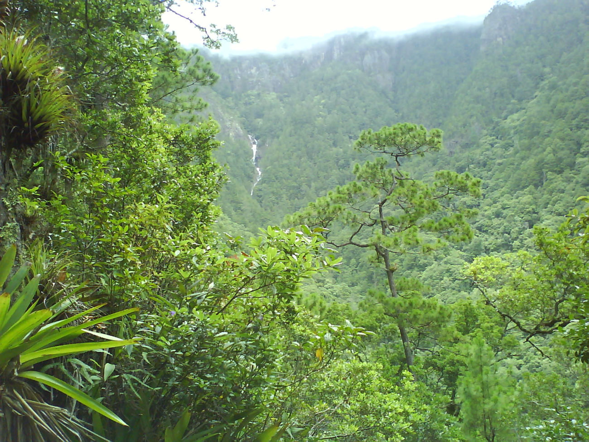
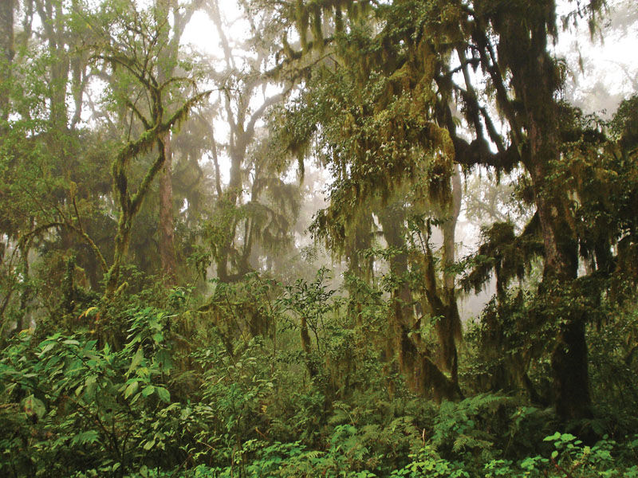
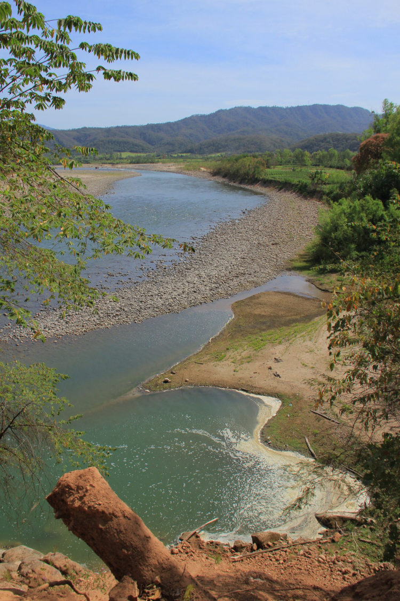
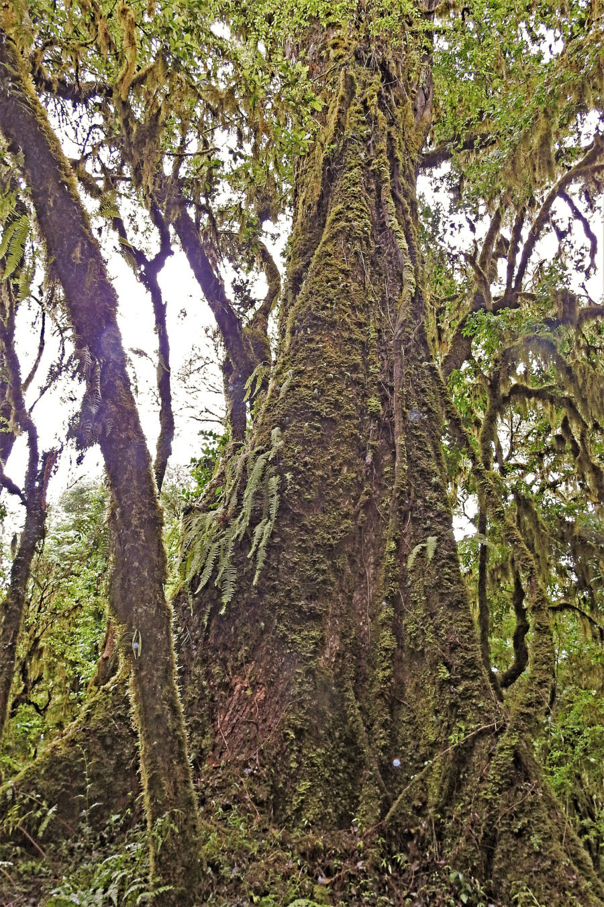
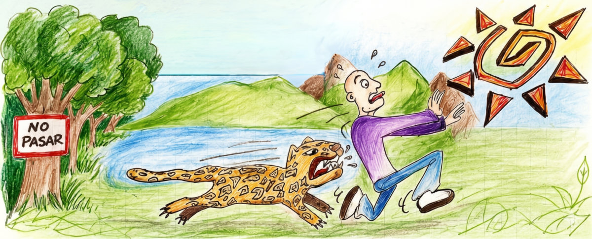
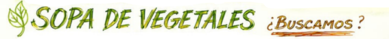
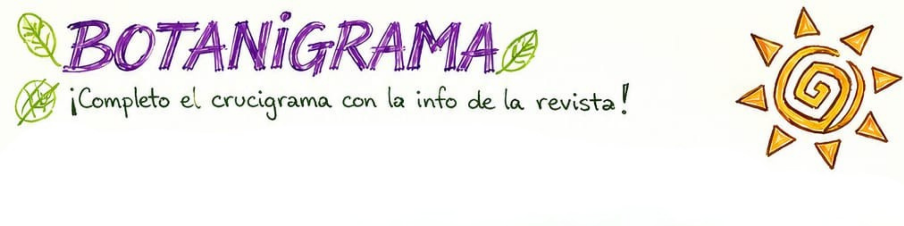

Una ciudad frontera
Cabecera del departamento Orán, está a unos 270 km de la ciudad de Salta y muy cerca de la frontera con Bolivia, lo que la convierte en un centro de intercambio comercial del norte argentino.
Salta · Argentina · Reserva de Biósfera de las Yungas
En el extremo norte de Salta, donde la selva de montaña se encuentra con los ríos, late uno de los ecosistemas más biodiversos de Argentina.
Descender a las Yungas ↓Un recorrido por la naturaleza de San Ramón de la Nueva Orán: territorio, fauna, flora, ríos y conservación. Elegí por dónde empezar.
Cabecera del departamento Orán, está a unos 270 km de la ciudad de Salta y muy cerca de la frontera con Bolivia, lo que la convierte en un centro de intercambio comercial del norte argentino.
Con estación seca: veranos cálidos y lluviosos, inviernos más templados. La humedad es alta casi todo el año por la influencia de las Yungas y los vientos húmedos del este.
Al oeste, las Sierras Subandinas y las Yungas, con quebradas y montañas cubiertas de vegetación. Al este, sectores llanos que hacen de transición hacia la llanura chaqueña.
«La combinación de montañas, selvas y llanuras favorece una gran variedad de especies vegetales y animales.»El río Bermejo articula la riqueza hídrica de la región.
Mamíferos, aves, reptiles, anfibios y peces conviven en una de las regiones más ricas del país. Una muestra de sus protagonistas.
Del catálogo botánico de campo: especies emblemáticas y sus usos tradicionales.

Imágenes reales del valle, los ríos y la selva de montaña que rodean a San Ramón de la Nueva Orán.



El Blanco, el Pescado y el Bermejo articulan un corredor ecológico. Filtrá las experiencias según lo que quieras vivir.
Todo lo que necesitás saber antes de viajar a Orán: cómo llegar, cuándo ir, con quién recorrer la selva y a quién consultar. Planificá tu travesía con cabeza.
Orán está en el extremo norte de Salta, a unos 270 km de la ciudad de Salta y muy cerca de la frontera con Bolivia. La Ruta Nacional 50 la une con Aguas Blancas y el paso fronterizo.
Clima subtropical con estación seca: la mejor época para los ríos y la selva es el período seco. Entre noviembre y abril las lluvias tropicales generan crecidas.
Las crecidas anegan la RN 50 y, durante las alertas, se suspenden travesías náuticas, pesca y senderismo.
El acompañamiento de guías habilitados es obligatorio, registrados ante el Ministerio de Turismo y Deportes de Salta. Ellos proveen embarcación, equipo y permisos.
La región forma parte de un corredor de naturaleza protegida que conviene recorrer con respeto y autorización.
Para planificar tu visita podés contactar a la Gerencia de Turismo de Orán (organismo oficial del municipio):
Hipólito Yrigoyen 141, San Ramón de la Nueva Orán, Salta.
gerenciaturaismooran@gmail.com +54 3878 35-8491
⚠️ Datos públicos, a modo de referencia. Este es un trabajo educativo estudiantil: no es el sitio oficial de la Gerencia de Turismo.
Un juego rápido sobre la fauna, los ríos, la geografía y la conservación de San Ramón de la Nueva Orán. Respondé, sumá puntos y, cuando quieras, volvé a empezar.

Tu puntaje
0 / 0

Arrastrá (o tocá y deslizá) sobre las letras para marcar las plantas del catálogo botánico. Pueden estar en horizontal, vertical o diagonal… ¡y al revés!

La palabra vertical SUSTENTABILIDAD ya está puesta como ayuda. Completá las palabras horizontales (1 a 10) con las pistas. Después tocá Verificar.
Proteger el patrimonio de Orán es responsabilidad de todos. Pequeñas acciones, un gran legado.